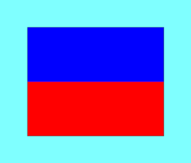

⚓ Star Racing Start Sequence
5 • 4 • 1 • GO
5
Minutes

Warning Signal
Flag E Raised
Code Flag “E” raised with one sound signal.
4
Minutes

Preparatory Signal
Flag P Raised
Code Flag “P” raised with one sound signal.
1
Minute
One Minute Signal
Flag P Lowered
Code Flag “P” lowered with one sound signal.
GO
Start
Starting Signal
Flag E Lowered
Code Flag “E” lowered with one sound signal.